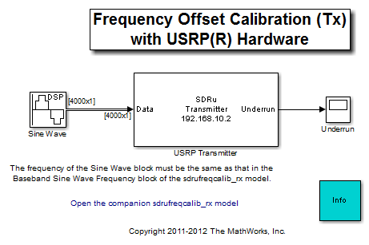
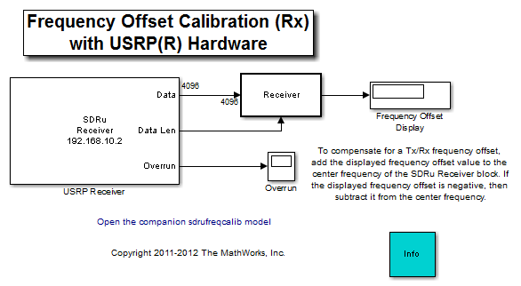
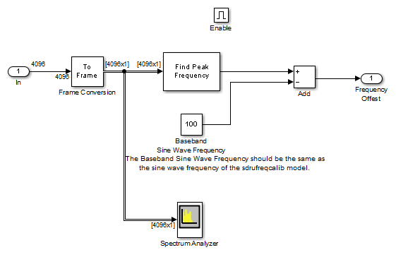
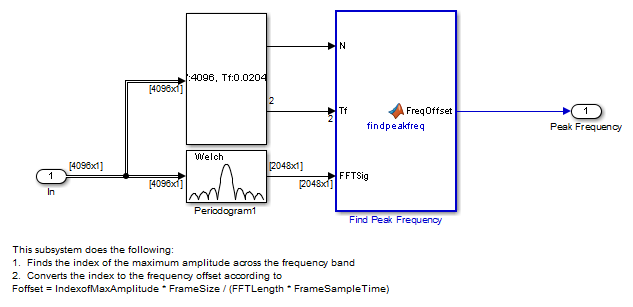
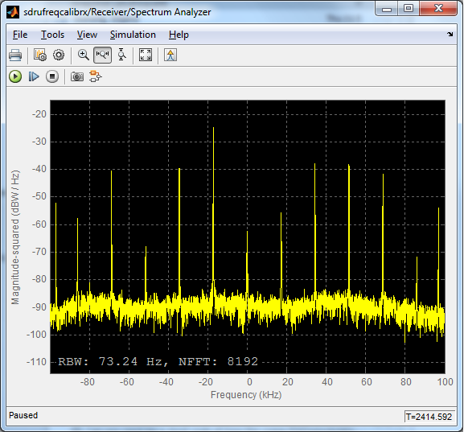

Frequency Offset Calibration with USRP® Hardware
These two models show how to determine the relative frequency offset between two Universal Software Radio Peripheral® (USRP®) devices using Simulink®.
The transmitter sends a 100 Hz sine wave with the Frequency Offset Calibration (Tx) with USRP® Hardware model. The receiver receives the signal, calculates the frequency offset and displays the offset in the Frequency Offset Calibration (Rx) with USRP® Hardware model.
In order to run these two models, you need to ensure that the specified center frequency of the SDRu Transmitter and Receiver blocks is within the acceptable range of your USRP® daughter board. Please refer to Getting Started for details on configuring your host computer to work with the SDRu Transmitter and Receiver blocks.
Contents
Overview
These two models perform an FFT-based frequency offset calculation at complex baseband. The receiver model provides the following information:
- The quantitative value of the frequency offset
- A graphical view of the spur-free dynamic range of the receiver
- A graphical view of the qualitative SNR level of the received signal
Structure of the Example
The following figure shows the transmitter model:
The following figure shows the receiver model:
The following figure shows the detailed structure of the Receiver subsystem:
- The Find Peak Frequency block - uses an FFT to find the frequency with the maximum power in the received signal.
- The Spectrum Analyzer block - computes and displays the power spectral density of the received signal.
Receiver
Find Peak Frequency
The Find Peak Frequency subsystem finds the frequency with the maximum power in the received signal, which equals the frequency offset plus 100 Hz. The following diagram shows the subsystem. In this subsystem, the Periodogram block returns the PSD estimate of the received signal. The Probe block finds the frame size and the frame sample time. With this information, this subsystem finds the index of the maximum amplitude across the frequency band and converts the index to the frequency value according to
Foffset = IndexofMaxAmplitude * FrameSize / (FFTLength * FrameSampleTime)
The MATLAB function findpeakfreq.m performs this conversion.
Spectrum Analyzer
The following figure shows the output of the Spectrum Analyzer on a frequency range of -100 kHz to 100 kHz. In the case shown below, the frequency with the maximum power of the received signal is about -17 kHz, and the spur-free dynamic range of the receiver is about 14 dB.

Running the Example
In order to calibrate the frequency offset between two USRP® devices, first start the Frequency Offset Calibration (Tx) with USRP® Hardware model on one USRP® radio, and then start the Frequency Offset Calibration (Rx) with USRP® Hardware model on another USRP® radio.
To run the receiver model, set the Center frequency parameter of the SDRu Receiver block to the same value as the center frequency setting of the Frequency Offset Calibration (Tx) with USRP® Hardware model. Then run the model. The frequency offset is calculated and displayed while the simulation is running.
To compensate for a transmitter/receiver frequency offset, add the displayed frequency offset value to the center frequency of the SDRu Receiver block. If the displayed frequency offset is negative, then subtract it from the center frequency. The spectrum displayed by the Spectrum Analyzer block should then have its maximum at 0 Hz.
Copyright Notice
USRP® is a trademark of National Instruments Corp.